Пересборка модуля аналитики и снижение нагрузки на команду в 2 раза
Внедрение AI в компании, когортный анализ и пересобрал модуль аналитики снизив нагрузку на команду в 2 раза
- Моя роль: Product Designer
- Аудитория: B2B, маркетологи и аналитики среднего и крупного бизнеса
Аналитика
Контекст
Аналитика - ключевой продукт, приносящий основную выручку. До редизайна интерфейс был на базе Elastic: пользователи выбирали отчёт из списка и получали преднастроенную таблицу с дашбордом.
Elastic решал задачу визуализации, но ограничивал функционал. Пользователи не могли создавать кастомные отчёты, настраивать фильтры или детализировать данные без поддержки. Плюс интерфейс визуально и логически не был консистентен остальным фичам.
Моя роль: Полностью отвечал за UX/UI решения. Веду итеративную работу в тесной связке с аналитиком, product owner (CEO) и командой разработки.
Задача: Спроектировать гибкий интерфейс аналитики, который даст пользователям контроль над данными и органично впишется в экосистему продукта.
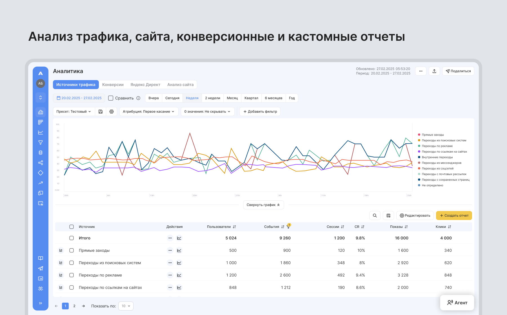
Конструктор отчётов
Главное изменение - пользователи создают отчёты сами, без поддержки. Вместо фиксированного списка, спроектировал конструктор с выбором метрик, настройкой атрибуции и периода. Можно дублировать и модифицировать существующие отчеты, добавлять кастомные метрики через формулы. Убрал «узкое горлышко» в виде зависимости от специалистов.
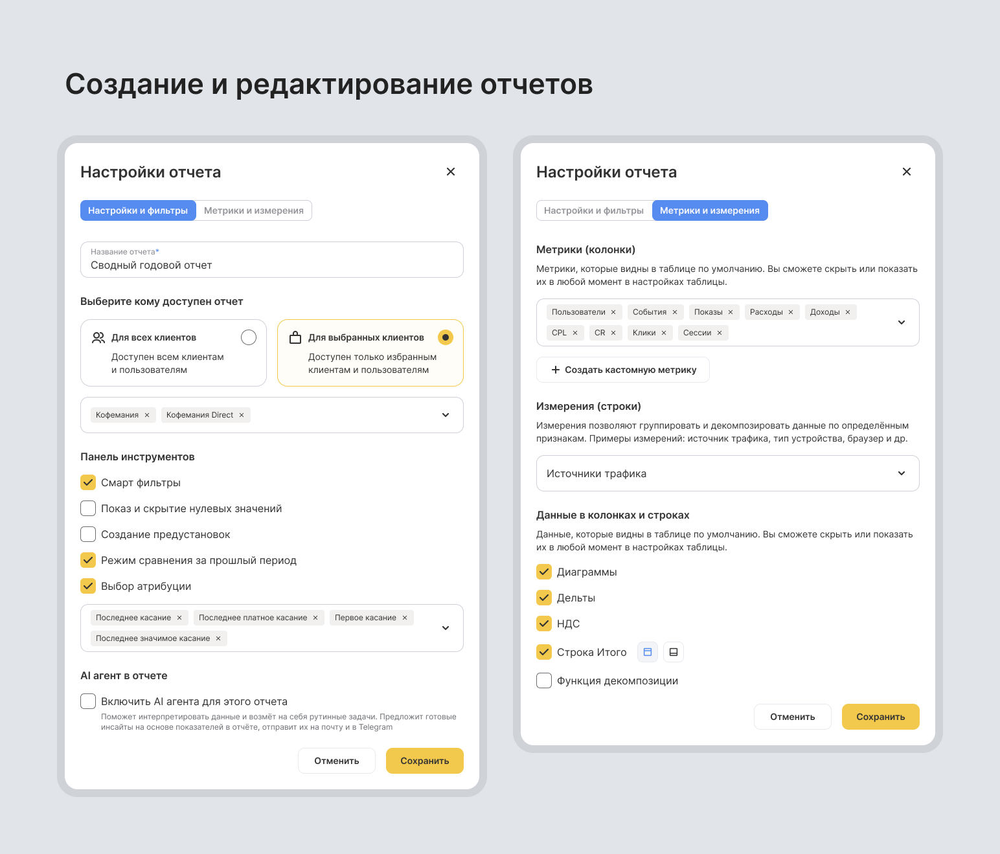
Смарт-фильтры
Самой сложной частью была система фильтров, которая комбинирует условия (устройства, ОС, тип трафика и др.) и мгновенно пересчитывает данные. Нужен был баланс между гибкостью и простотой. После первых прототипов провёл сессию с двумя аналитиками: оба пытались вводить значения вручную, хотя по задумке нужно было выбирать из списка. Выявили проблему, добавили ручной ввод и операторы в поле поиска.
При клике на "Добавить фильтр" открывается поиск с встроенными операторами. Данные можно выбрать из списка или вбить руками: применить точное совпадение (=), исключить значение (-), указать несколько через запятую или диапазон (>=, <=).
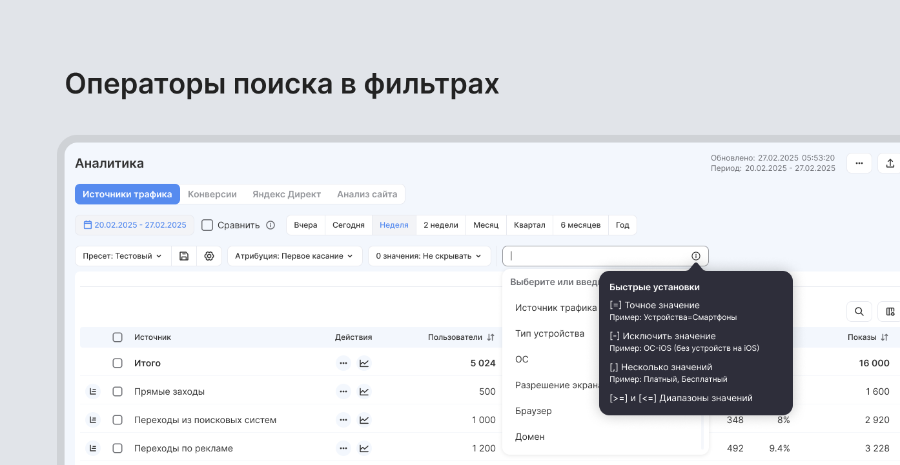
Фильтры показываются чипсами над таблицей, логика И/ИЛИ между группами, можно очистить всё одной кнопкой.
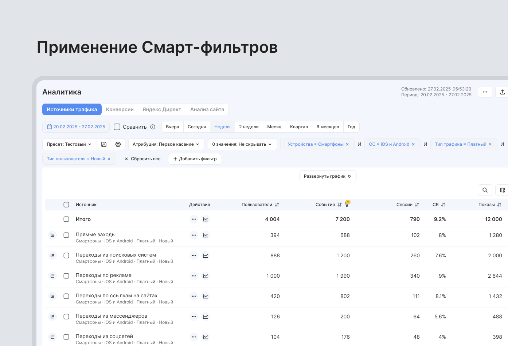
Декомпозиция данных
Вторая по сложности задача - раскрытие данных на несколько уровней. Например, уже отфильтрованные "Переходы из поисковых систем" можно раскрыть на "Десктопы/Мобильные", потом на конкретные ОС, потом на устройства.
С командой договорились что в текущей итерации можем обеспечить до 3 уровней вложенности. Любую ветку можно свернуть/развернуть/очистить, а декомпозированные данные пересчитываются с учётом фильтров.
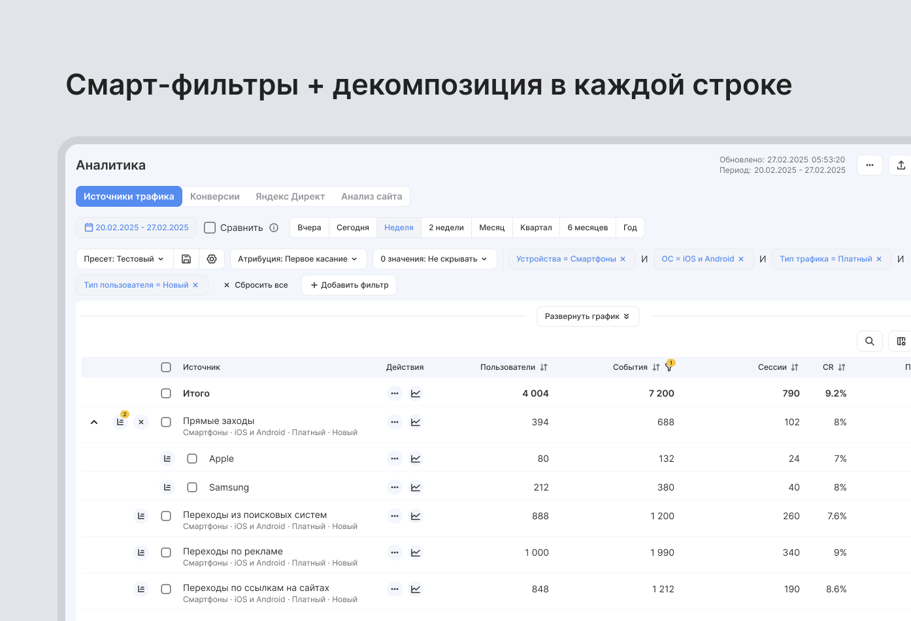
Режим сравнения периодов
Добавил возможность сравнивать текущий период с предыдущим - в таблице появляются дельты в процентах и абсолютных значениях. Цветовая индикация роста (зелёный) и падения (красный), процентное и абсолютное изменение в одной ячейке, сортировка по дельте.
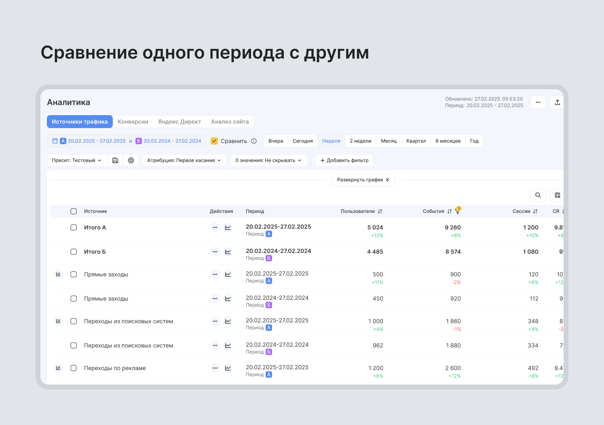
Настройка таблиц и консистентность
Добавил универсальные настройки таблицы, которые работают одинаково во всех разделах. Пользователь может скрывать ненужные колонки, включать дельты или диаграммы, настраивать выравнивание текста. Каждый адаптирует таблицу под себя, без экспорта в Excel и создания отдельных представлений.
Графики и визуализации над таблицей мы заимствуем из open source Vega (не было ресурса и смысла изобретать велосипед для работающего решения), но настройки графиков, сами таблицы, фильтры, навигацию привёл к единому дизайн-языку Андаты.
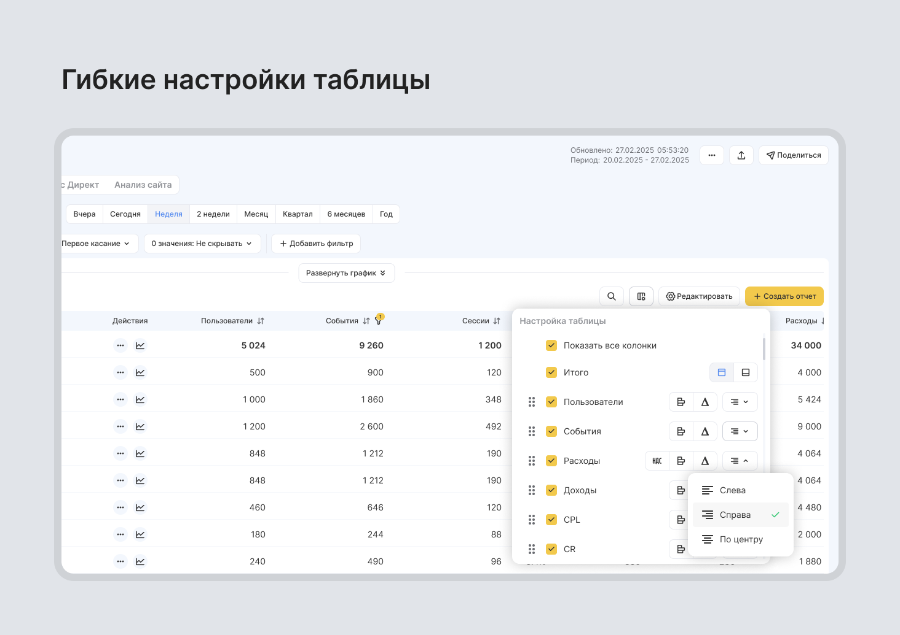
Процесс работы
Это не разовый проект, а постоянная итеративная работа. Аналитика приносит основную выручку, поэтому мы постоянно дополняем её новыми возможностями на основе фидбека аналитиков и клиентов. Каждый квартал добавляем новые метрики, улучшаем производительность таблиц, расширяем функции и возможности фильтрации.
Проводил демо, показывал решение разработчикам до того, как уходил в детали, чтобы поймать технические ограничения раньше, чем они станут проблемой в проде. Например избежали серьёзной ошибки: на ревью бэк показал, что вариант декомпозиции с бесконечными уровнями вложенности даст экспоненциальный рост запросов к базе. Поэтому переделали до трёх уровней и по итогу для пользователей этого оказалось достаточно.
Результат
По оценке команды, конструктор отчётов и смарт-фильтры снизили нагрузку на аналитиков и разработку в 2 раза. Большая часть SMB клиентов перестали открывать тикеты на кастомные отчёты, потому что научились делать их сами. Среднее время настройки отчёта упало с 45 минут до 8 минут.
Выводы
Смарт-фильтры и декомпозиция стали самыми используемыми фичами - по данным поддержки, 89% пользователей применяют хотя бы один фильтр в каждом отчёте. Конструктор отчётов дал автономность и избавил от необходимости ждать помощи специалистов.
Что бы улучшил:
- Добавил бы drag&drop строк и столбцов в визарде создания отчёта
- Интерактивные туториалы для новичков, но это пока упирается в ресурсы
Когортный анализ
Контекст
Крупные клиенты регулярно запрашивали когортный анализ для отслеживания retention и поведения пользователей в разрезе когорт. У нас уже были инструменты аналитики, но когорт не хватало.
Моя роль: Полностью отвечал за UX/UI решения. Работал с аналитиком, product owner (CEO) и командой разработки.
Задача: Спроектировать интерфейс когортного анализа, который органично встроится в существующую аналитику и будет понятен без обучения.
Визуализация через тепловую карту
В нашу стандартную таблицу добавил цветовое кодирование - чем выше retention, тем насыщеннее синий. Паттерны считываешь мгновенно, не вглядываясь в каждую цифру. Градиент от светло-голубого до насыщенного синего, процент и абсолютные значения в каждой ячейке.
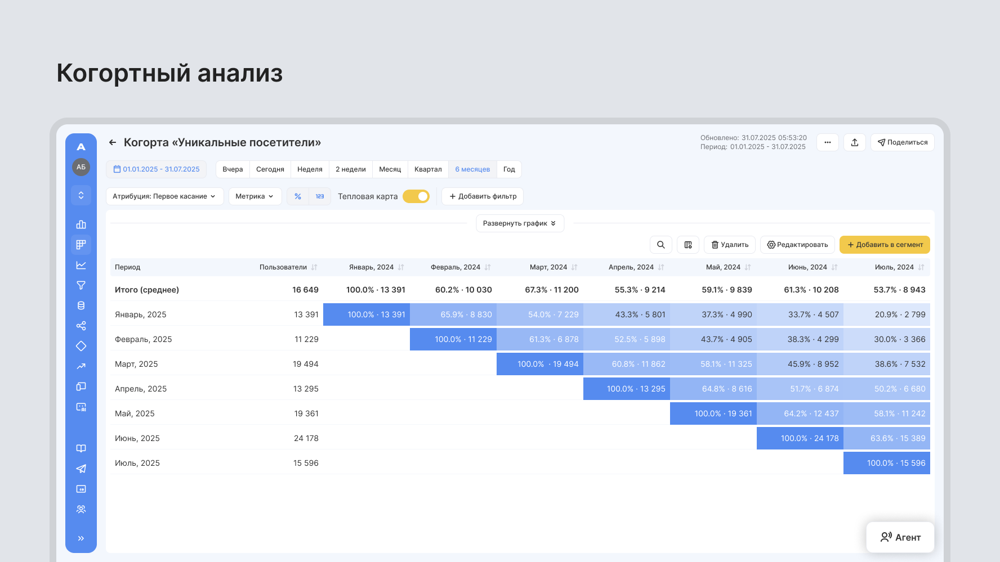
Визуализацию можно отключить для тех, кто предпочитает классические таблицы. Есть возможность отображения процентов и абсолютных значений одновременно в каждой ячейке.
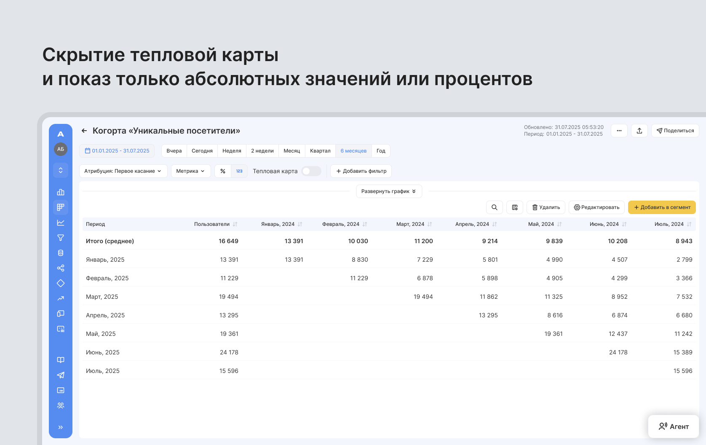
Унифицированный визард
Спроектировал новую структуру визарда, которая частично опиралась на существующие паттерны Воронок и Сегментов, но привнесла новую логику из двух-трех шагов.
Внутри визарда: события и URL как условия попадания в когорту, гибкие настройки метрик и выбор гранулярности когорты. Строку и колонку "Итого" можно разместить где угодно (слева/справа, сверху/снизу). Мелочь, но аналитикам с большими датасетами критично настроить таблицу под свой workflow.
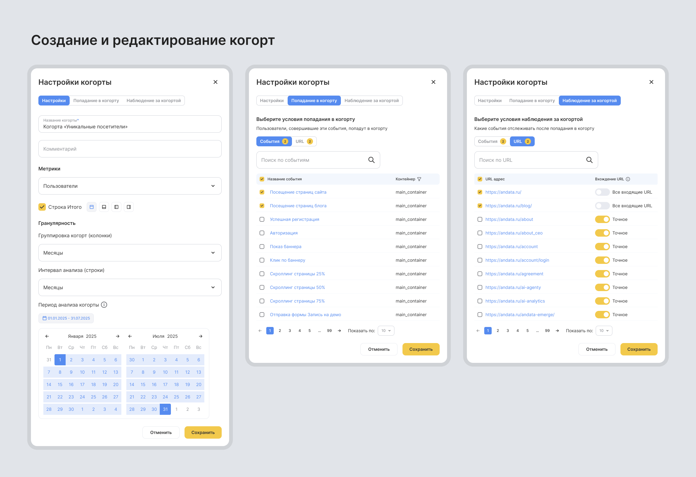
Подход оказался удачным и позже стал прообразом визарда для Воронок и Сегментов. Изначально я адаптировал знакомые паттерны под когорты, но в процессе нашёл более логичную структуру, которая улучшила UX всей аналитики.
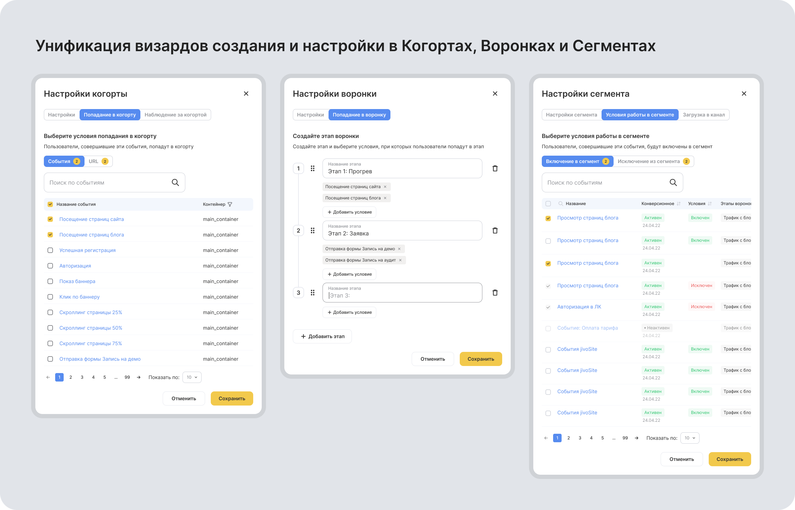
Челленджи
Когортный анализ сложный инструмент. Риск был в том, что пользователи не поймут или настройка займёт слишком много времени. Унификация с существующими фичами означала компромиссы, что некоторые специфичные настройки нужно было втиснуть в общий паттерн.
Результат
После релиза, в первый месяц 64% крупных клиентов начали активно использовать новый функционал. На квартальных встречах пользователи отметили простоту настройки, создание когорты занимает меньше времени по сравнению с конкурентными решениями.
Выводы
Неожиданный инсайт в том, что унификация визарда была побочным эффектом, а не целью. Я адаптировал знакомые паттерны под Когорты, но в процессе нашёл более логичную структуру. Потом её перенес на Воронки и Сегменты, потому что решение оказалось функционально лучше. Общий визард ускорил adoption среди пользователей, которые уже работали с продуктом. Это напомнило мне, что системное мышление иногда работает в обратном направлении: улучшаешь одну фичу и тянешь за ней другие инструменты.
Визуализация через тепловую карту позволила считывать данные моментально, без вглядывания в каждую цифру, а гибкие настройки таблицы закрыли потребности как новичков, так и опытных аналитиков с большими датасетами.
Общее влияние и выводы
За 2 года в Андата удалось проработать и запустить ключевые модули продукта, напрямую влияющие на выручку компании.
- Запустил MVP и бета-версию AI-агентов. 82% пользователей в бета-тестировании создали хотя бы одного агента в первую неделю, без онбординга и инструкций
- Новый конструктор отчётов и смарт-фильтры снизили нагрузку на аналитиков и разработку в 2 раза. Большая часть клиентов перестали открывать тикеты на кастомные отчёты, потому что научились делать их сами. Среднее время настройки отчёта упало с 45 минут до 8 минут
- Когортный анализ показал adoption rate 64% среди наших крупных клиентов. Визард когорт стал прообразом для других фич не потому что это была изначальная цель, а потому что решение оказалось функционально правильным
- В общем сократил количество несоответствий в дизайне и улучшил визуальную доступность как в ключевых сценариях так и в UI-kit
Инсайты
- Консистентность оказалась важнее инноваций в отдельных фичах. Системное мышление целыми путями пользователя, а не отдельными экранами, стала для меня важным поинтом в сложных B2B продуктах
- Работа над продуктами, приносящими основную выручку, в условиях ограниченных ресурсов, требует баланса между стабильностью и развитием. Каждое изменение тестировалось так, чтобы пользователи не теряли привычный функционал
- Отсутствие формальных исследований в Андата компенсировалось глубоким погружением в бизнес-логику, коридорными тестами и тесным взаимодействием с топ-менеджментом